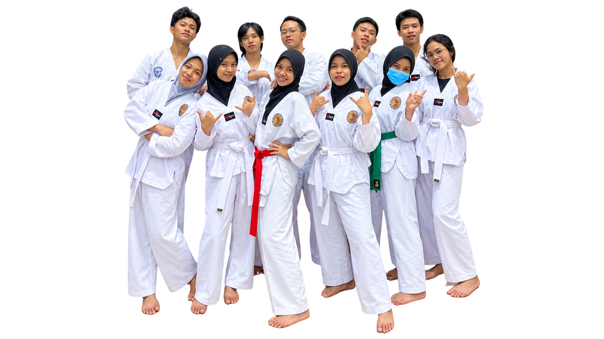
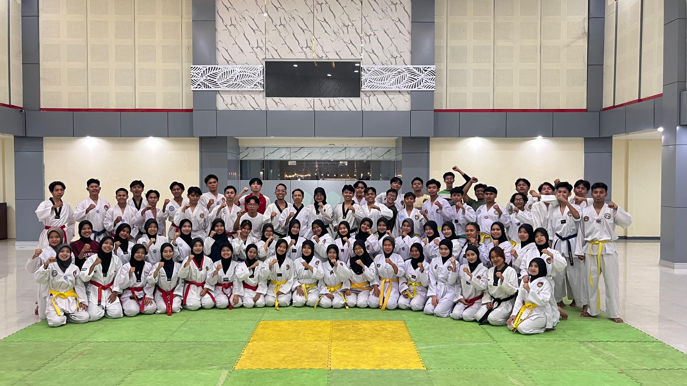

Kamis, 29 Oktober 2026
Lokasi : GOR Perjuangan 45 Politeknik Negeri Jember (POLIJE)
Materi : Latihan gerakan dasar hingga menengah (Kyorugi)
Lihat SekarangKembangkan potensimu dan pelajari seni bela diri bersama UKM Taekwondo. Dapatkan pengalaman baru, relasi, dan tubuh yang lebih sehat. Jangan lewatkan kesempatannya, klik Daftar Sekarang!

Lokasi : GOR Politeknik Negeri Jember
Lokasi : GOR Perjuangan 45 Politeknik Negeri Jember (POLIJE)
Materi : Latihan gerakan dasar hingga menengah (Kyorugi)
Lihat SekarangLokasi : GOR Perjuangan 45 Politeknik Negeri Jember (POLIJE)
Materi : Latihan gerakan dasar hingga menengah (Kyorugi)
Lihat SekarangLokasi : GOR Perjuangan 45 Politeknik Negeri Jember (POLIJE)
Materi : Latihan gerakan dasar hingga menengah (Kyorugi)
Lihat SekarangUKM Taekwondo Politeknik Negeri Jember berdiri pada [tahun] atas inisiatif [mahasiswa/dosen/pembina] yang melihat besarnya minat mahasiswa terhadap seni bela diri. Pada awalnya, kegiatan latihan dilakukan secara sederhana di [lokasi awal latihan] dengan jumlah anggota sekitar [jumlah] orang. Meski fasilitas masih terbatas, semangat para anggota untuk belajar dan berlatih menjadi modal utama berdirinya UKM ini.
Menjadikan GOR Perjuangan 45 Politeknik Negeri Jember (POLIJE) sebagai pusat pengembangan prestasi dan pembinaan karakter mahasiswa melalui kegiatan olahraga yang menjunjung tinggi sportivitas dan solidaritas.
Menyelenggarakan program latihan rutin dan kompetisi olahraga secara berkala di lingkungan POLIJE.
Memfasilitasi mahasiswa dalam mengembangkan minat dan bakat di berbagai cabang olahraga.
Ketua Umum
Ketua Umum
Ketua Umum
Ketua Umum
Ketua Umum
Informasi dan Agenda terbaru UKM Taekwondo
08:00 - 12:00 WIB • GOR Perjuangan 45 Polije
08:00 - 12:00 WIB • GOR Perjuangan 45 Polije

UKM Taekwondo Polije kembali membuka pendaftaran anggota baru bagi seluruh mahasiswa aktif yang ingin mengasah fisik dan prestasi.
SelengkapnyaUKM Taekwondo Polije kembali membuka pendaftaran anggota baru bagi seluruh mahasiswa aktif yang ingin mengasah fisik dan prestasi.
Selengkapnya